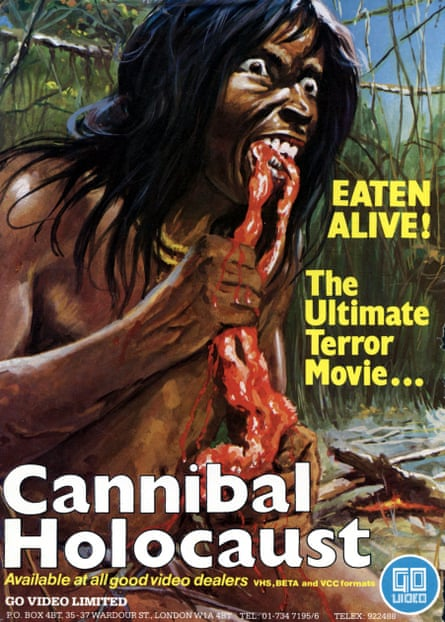
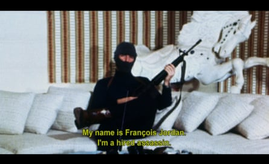

Later this month, the cult film service Arrow will do something that would once have plunged the UK into screaming fits of utter chaos. That’s right, it’s going to stream Zombie Flesh Eaters.
The film comes with a tremendously confusing backstory. In Italy, George A Romero’s Dawn of the Dead was recut by Dario Argento and retitled Zombi. Zombi, no relation to Bambi, was such a success that a sequel was commissioned, using the script of an unmade movie entitled Nightmare Island. This film became Zombi 2. In the UK, Zombi 2 was renamed Zombie Flesh Eaters. And then it was banned.
This was largely down to the campaign waged against so-called “video nasties” in the early 1980s. Driven by newspaper front pages screaming things like “BAN VIDEO SADISM NOW”, police officers began conducting raids on video shops, confiscating anything they saw as breaching the Obscene Publications Act.
The confiscations felt arbitrary (in Slough, officers seized Dolly Parton’s The Best Little Whorehouse in Texas, under the impression it was pornography), but eventually 39 films were successfully prosecuted under the act. Zombie Flesh Eaters was one of them. And now its unimaginable horrors are available to stream, uncut and in pin-sharp 4K.
In truth, it’s been around for a while. Around the turn of the century, the BBFC loosened its regulations, and the banned films began to trickle out. Not all of them – 1969’s Nazi sex film Love Camp 7 is still routinely refused a certificate, as is the thematically similar Gestapo’s Last Orgy – but Zombie Flesh Eaters has been available to legally watch uncut for two decades now.
More fleshed out … Cannibal Holocaust.Photograph: Ronald Grant Archive
Which means that I probably should have watched it by now. After all, if you grew up in the 80s and 90s like I did, nothing gave a movie more cachet than being banned. All these films had a too-hot-for-TV thrill to them; if you weren’t allowed to watch them, they had to be good. And yet I never got around to watching Zombie Flesh Eaters.
Turns out I didn’t need to bother. Not because the Thatcher government was right and the film has turned me into a depraved subversive, but because it lumbers on for ever, grinding through endless overlong, overacted dialogue scenes that go nowhere and do nothing. Admittedly there are hints of gleeful gore here and there. In one scene a woman’s eyeball is impaled, and there’s a tremendous underwater sequence with a zombie, a topless woman and what appears to be an actual live shark. Maybe there was some religious outrage that has lost its impact over the years (OK, a zombie does get its head caved in with a crucifix), but otherwise it contains nothing that wouldn’t be found in a workaday Game of Thrones episode.
Would it get banned today? Unlikely. In an age where Damien Leone can release three Terrifier movies (where, variously, a man is chainsawed to death through his scrotum and a woman has a rat-filled pipe hammered down her throat), it’s practically daytime television. I grew up scared and fascinated by the prospect of Zombie Flesh Eaters corrupting my mind. Now that I have actually seen it, I’m afraid to report that Zombie Flesh Eaters is no Zombie Flesh Eaters.
Were all the banned films like that? Has society moved on so much that everything we once feared would undo society has become unimaginably hokey? I decided to watch some of the other 39 films to find out. I started with the most notorious, John Alan Schwartz’s Faces of Death.
Harrowing … Faces of Death.Photograph: Courtesy: John Felice
No film was arguably bolstered more by a banning than Faces of Death. A mockumentary that combines unaired news footage with material shot for the film, Faces of Death presented itself as a compilation of every kind of death: accidents, executions, suicide, cannibalism. Back when nobody could see it, it sounded like a kind of aggressively violent precursor to You’ve Been Framed. But that isn’t what it is at all. It is, in fact, a harrowing look at human suffering. There’s Holocaust footage. There are starving children. There’s violence against animals (staged) and footage of body parts scattered across the ground following a plane crash (real). It is, to put it lightly, an incredible bummer to watch.
Despite its reputation, Ruggero Deodato’s Cannibal Holocaust was slightly easier to watch. You can understand the nerves around releasing it – it features graphic sexual violence, and more than one scene of animals being killed – but at least it had the benefit of having an identifiable point of view. The film is a satire about cultural appropriation and media sensationalism, in which an American documentary crew travel to the Amazon rainforest and get in over their heads. Which in terms of intent puts it above a lot of the other banned films, but the execution muddles the message. After all, if you have to kill an animal to make a point about media sensationalism, you’ve already lost the argument.
And then there’s Meir Zarchi’s I Spit on Your Grave, a film that lacks either the intellectual rigour of Cannibal Holocaust or the fun of Zombie Flesh Eaters. It is one of the least enjoyable films I have ever watched.
I Spit on Your Grave is a film in which a woman exacts revenge against a group of men who gang rape her. It was banned in the UK, as well as in Canada, Iceland, Ireland, Norway and West Germany. This is likely due to the point of the film being the rape itself. So much time is dedicated to the rape sequence that the revenge part feels tacked on, as if it wants to trick you into thinking that it’s a feminist film. It’s worth pointing out that I Spit on Your Grave still hasn’t been released here uncut – some heavily eroticised rape scenes still contravene BBFC guidance – but the edited version available on Amazon Prime was still so unpleasant that it represents the only time I have ever welcomed the intrusion of interstitial ads.
Sickening … Slaughtered Vomit Dolls.Photograph: MUBI
And yet by modern standards, even these video nasties pale next to what is now circulating online. For the purposes of this feature, my editor ushered me towards a 2006 film called Slaughtered Vomit Dolls, part of Lucifer Valentine’s Vomit Gore trilogy, along with ReGOREgitated Sacrifice and Slow Torture Puke Chamber. A surreal satanist film about a woman with an eating disorder, Slaughtered Vomit Dolls contains scenes of torture and several scenes in which people vomit various fluids, some of which are gobbled straight back up. It was awful. If this was 1983, it would have been banned in a heartbeat.
Because time has rendered Zombie Flesh Eaters so quaint, my assumption was that all the other banned films would be equally silly and kitschy. After all, we’re talking about a government so jumpy that it also banned the third word in the title of Teenage Mutant Ninja Turtles. But that isn’t the case, since a lot of these films are still genuinely repellent. What has changed, though, is our attitude to them. Clearly, banning them only served to boost their reputation, whereas if they had been allowed to remain in public, I’m convinced that they would have all died in obscurity decades ago. In other words, less “BAN VIDEO SADISM NOW” and more “LET’S WATCH SOMETHING THAT’S ACTUALLY GOOD”.
Zombie Flesh Eaters is available to stream on Arrow and on Limited Edition 4K UHD from 28 July